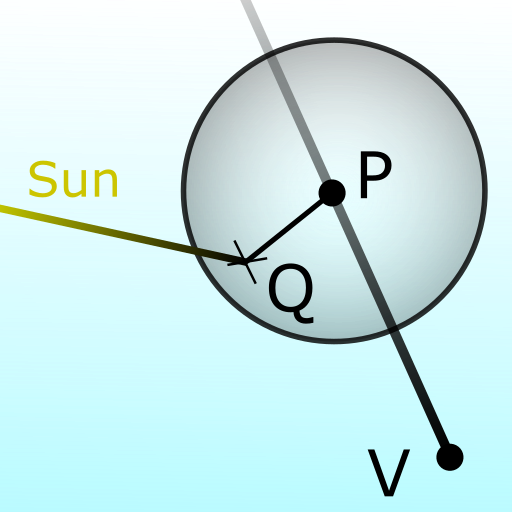
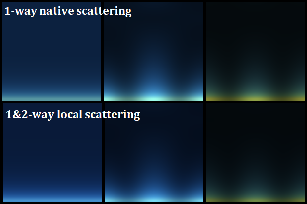
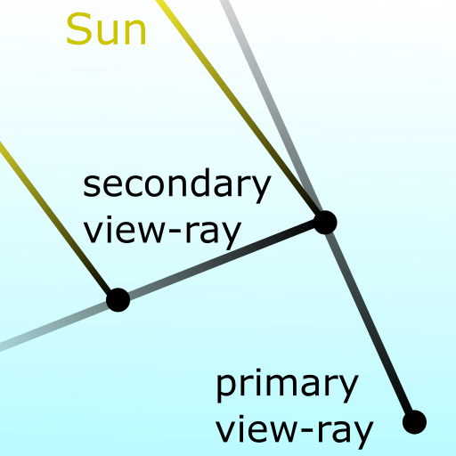

Real-time procedural sky rendering
This post demonstrates how the sky can be fully procedural rendered in real-time. I will describe some of the methods that I found relevant for my case, which is to render the sky being at low altitude and above the ocean (flat land, highly reflective). A naive implemention is firstly detailed, then the computation is gradually complexified to obtain more convincing sky.
1. Atmospheric scattering

The sky color is due to the atmospheric scattering, that comes from the interaction of the particles in the atmosphere with the light. There are two main scattering types:
- the Rayleigh scattering that explains the color-gradient of the sky,
- the Mie scattering that makes the clouds visible.
The scattering effect is locally defined by a phase function, that expresses the ratio between the incoming and the outcoming light at a certain angle. It is assumed that the Rayleigh and Mie scatterings do not interfere, thus their effect is additive. With \( h \) being the altitude and \( \theta \) the angle between the incoming and outcoming light direction, the scattering is computed as following: $$ \sigma(h,\theta) = \beta_R(h) \; \phi_R(\theta) + \beta_M(h) \; \phi_M(\theta) $$ where
- \( \beta_R(h) = \beta_{R0} \{ 0.11, 0.32, 0.68 \}_{rgb} \; e^{-h/h0_R} \) is the Rayleigh scattering coefficient,
- \( \beta_M(h) = \beta_{M0} \{ 0.5, 0.5, 0.5 \}_{rgb} \; e^{-h/h0_M} \) is the Mie scattering coefficient,
- \( \phi_R(\theta) = \frac{3}{16 \pi} \left( 1+\cos(\theta)^2 \right) \) is the Rayleigh phase function,
- \( \phi_M(\theta) = \frac{3}{8 \pi} \left( \frac{1 - g^2}{2 + g^2} \right) \frac{1+\cos(\theta)^2}{ \left( 1 + g^2 - 2 g \cos(\theta) \right) ^{ \frac{3}{2} }} \) is the Mie phase function.
with \( h0_R = 8 km \) and \( h0_M = 1.2 km \) being the characteristic altitude of the Rayleigh and Mie scattering, and \( \beta_{R0} \) and \( \beta_{M0} \) two coefficients that control the strength of the scattering. From this, I can compute the light extinction, which is the part of the light being absorbed between two points: $$ \alpha(path) = \exp ( - \alpha_c \; d_{optic} ) $$ where \( d_{optic} \) is the optical distance and \( \alpha_c = 0.037 \) is the extinction coefficient, taken from empirical observation of the results. The optical distance is computed as following: $$ d_{optic} = \beta_{R0} \int_{path} { e^{-h/h0_R} dl } + \beta_{M0} \int_{path} { e^{-h/h0_M} dl } $$
2. Single scattering implementation

The single scattering is often detailed and implemented in online resources. It is quick to implement, and it allows real-time rendering with the help of few trade-offs. The single scattering method consists in the discretization of the view ray in multiple points, and to compute the light being scattered at all of those points. Then, there are two light segments, one from the viewer to the point (VP), one from the point to the source (PS). The received light by the viewer V is defined by: $$ \overline{L} = L_{sun} \int_{P \in ray} { \alpha(V \rightarrow P) \; \alpha(P \rightarrow Sun) \; \sigma(P) \; dl } $$ where \( \alpha(path) \) is the extinction along the path and \( \sigma(P) \) the scattering at the point P.
Extinction pre-computation
The extinction is an integral that is costly to evaluate by summation.
To prevent this, many resources are using a pre-computed lookup texture.
I could use the same technique, but I decided to use a math approximation instead.
Because the Earth radius is large compared with the altitude of the viewer and the characteristic altitudes of the scattering effect,
I can express the optical-distance to the sun with:
$$ d_{optic,sun} = \int_{path} { e^{-h/h0} dl }
\simeq \int_{x=0}^{+\infty} { e^{ - ( a x^2 + b x + c ) } dx }
= \frac{\sqrt{\pi}}{2\sqrt{a}} e^{-c} e^{\frac{b^2}{4a}} \left( 1 - \mathrm{erf} \left( \frac{b}{2\sqrt{a}} \right) \right) $$
where \( a = \frac{1-cos^2 \theta}{2 R h0} \) , \( b = \frac{cos \theta}{h0} \) , \( c = \frac{h_{start}}{h0} \) .
This approximation is fairly good while the ray does not travel towards the ground (while \(b\) is positive).
I also use asymptotic approximations of the erf function to have more friendly expression to compute.
When \(b\) is negative, I consider that the ray starts at its lowest altitude point.
Finally, the optical distance to the sun is expressed with:
$$ d_{optic,sun} =
\begin{cases}
e^{-c} \frac{\sqrt{2 \pi R h0}}{2} e^{\frac{R \cos^2{\theta}}{h0}} \; \; \; \mathrm{ when } \; b < 0
\\
e^{-c} \frac{1}{b} \left(1 - \frac{2a}{b^2} + \frac{12a^2}{b^4} \right) \; \; \; \mathrm{ when } \; b > 7 \sqrt{a}
\\
e^{-c} \frac{\sqrt{\pi}}{2 \sqrt{a}} \left( 0.3480242 p - 0.0958798 p^2 + 0.7478556 p^3 \right) \; \; \; \mathrm{ with } \; \; \; p = \frac{2 \sqrt{a}}{2 \sqrt{a} + 0.47047 b}
\end{cases}
$$
Results
This implementation of the sky scattering gives a plausible result with low effort. But I was not able to reproduce skies with enough consistency. In short terms, at midday, the sky looks too dark compared with the horizon light intensity. To increase the extinction coefficient may appear as a solution, but the sky will appear yellowed even at midday. The overall light intensity behaves weirdly, with a maximal intensity not at midday. The light intensity is lower on the sides, producing spurious pattern. This comes from the Rayleigh phase function. With Mie scattering, the horizon appears dark (not shown here). This is because the poor sampling of the Mie scattering effect, where the light is highly absorbed at low altitude. On the picture below, the sky is rendered with Rayleigh scattering only, from midday to sunset.

The shader code
Single scattering (Click to expand.)
uniform vec3 sunDirectionIncoming; uniform float factorMie; uniform float gMie; const float rE = 6.3e3f; // radius of Earth (km) const vec2 h0 = vec2(8.f, 1.2f); // ch. altitude (Rayleigh, Mie) (km) const float extinctionCoef; // extinction coefficient const float hMax = 50.f; // max altitude for computations const int rayIntg_nsteps; // nbr of integration points const float rayIntg_norm = 1.f/float(rayIntg_nsteps); const vec3 scatteringCoefs_R = vec3(0.11f, 0.32f, 0.68f); const vec3 scatteringCoefs_M = vec3(0.50f, 0.50f, 0.50f); vec3 localScatteringLight(float h, float c) { vec3 fR = exp(-h / h0.x) * scatteringCoefs_R; vec3 fM = exp(-h / h0.y) * scatteringCoefs_M * factorMie; float cc = c * c; float gg = gMie * gMie; float den = 1.f + gg - 2.f * c * gMie; float phaseR = 0.05968310365946075f * (1.f + cc); float phaseM = 0.1193662073189215f * (1.f - gg) * (1.f + cc) / (sqrt(den * den * den) * (2.f + gg)); return fR * phaseR + fM * phaseM; } vec2 opticalDistanceGroundToSun(float csz) { csz = max(0.f, csz); vec2 a = 0.5f * (1.f - csz * csz) / h0 / rE; vec2 b = csz / h0; vec2 sqrta = sqrt(a); vec2 ainvbb = a / (b * b); vec2 p = (2.f * sqrta) / (2.f * sqrta + 0.47047f * b); vec2 optInf = (1.f - 2.f*ainvbb + 12.f*ainvbb*ainvbb) / b; vec2 optMid = 0.5f * sqrt(3.141592f / a) * p * (0.3480242f - 0.0958798f * p + 0.7478556f * p * p); vec2 ret; ret.x = (b.x > 7.f * sqrta.x) ? optInf.x : optMid.x; ret.y = (b.y > 7.f * sqrta.y) ? optInf.y : optMid.y; return ret; } vec3 skyColor(vec3 rayView) { vec3 ray = vec3(rayView.xy, abs(rayView.z)); float cvz = max(rayView.z, 0.f); // cos view zenith float hMaxOverR = hMax / rE; float rayLength = rE * (sqrt(cvz*cvz + 2.f * hMaxOverR + hMaxOverR*hMaxOverR) - cvz); float step = rayLength * rayIntg_norm; float cosRS = dot(-sunDirectionIncoming, ray); // cos of angle between the ray and the sunlight vec3 lightAcc = vec3(0.f); vec2 optD_VP = vec2(0.f, 0.f); for (int iStep = 0; iStep < rayIntg_nsteps; ++iStep) { float x = (0.5f + float(iStep)) * step; vec3 pt = vec3(0.f, 0.f, rE) + x * ray; float rP = length(pt); float hP = rP - rE; // elevation float csz = clamp(dot(pt, -sunDirectionIncoming) / rP, -1.f, 1.f); vec2 optD_GroundSun = opticalDistanceGroundToSun(csz); vec2 rhoP = exp(-hP/h0); float cszNeg = min(0.f, csz); vec2 optD_PS = optD_GroundSun * exp(-(hP - cszNeg*cszNeg*rE)/h0); // direct scattering { vec3 globalOptD = (optD_VP.x + optD_PS.x) * scatteringCoefs_R + (optD_VP.y + optD_PS.y) * scatteringCoefs_M * factorMie; vec3 localScatteringPS = localScatteringLight(hP, cosRS); lightAcc += stepx * exp(-extinctionCoef * globalOptD) * localScatteringPS; } optD_VP += step * rhoP; } { float sunDisk = min(exp(6.e4f * (cosRS-0.999962f)), 1.f); // Note: the sun-disk is 0.25 degree radius lightAcc += sunDisk * 5.f * vec3(1.f, 1.f, 1.f); } return lightAcc; }
Impact of the number of discretized points
I did some tests with various count of discretization points (rayIntg_nsteps).
Having less scattering points gives a sky as if the extinction coefficient is higher.
Indeed, it leads to a brighter and more uniform sky, but more yellowished near the horizon.
As expected, the number of discretization points strongly impacts the performances.

Two steps discretization with both Rayleigh and Mie scattering
Because the Mie scattering has a 8-times lower characteristic altitude than the Rayleigh scattering characteristic altitude, the distribution of the discretization points significantly affects the output. To have a good sampling of the Mie scattering, the distance between two points should not exceed about 1 km. On other hand, the total distance traveled in the atmosphere varies from 80 km to nearly 200 km. While keeping the reasonably low number of discretization points, the distribution of the points cannot be uniform anymore. I choose to split the view-ray in 2 parts: a first part with a short distance between 2 discretization points (so the Mie scattering will be correctly evaluated), and a second part with a long distance (so the Rayleigh scattering will be correctly evaluated).
Shader-code. (Click to expand.)
[...]
float stepxA = 5.f * 0.5f * rayIntg_norm;
float stepxB = (rayLength - 5.f) * 0.5f * rayIntg_norm;
for (int iStep = 0, stop = 2 * rayIntg_nsteps; iStep < stop; ++iStep)
{
float stepx = (iStep < rayIntg_nsteps) ? stepxA : stepxB;
float x = (iStep < rayIntg_nsteps) ? (0.5f + float(iStep)) * stepxA :
5.f + (0.5f + float(iStep - rayIntg_nsteps)) * stepxB;
[...]
}
3. Multiple scattering methods
To improve the results, the indirect scattering needs to be taken account. I choose to explore two ideas: to determine better local scattering phase function and to consider multiple scattering events.
3.1 Local scattering phase function

I start by considering a local small sphere around the point P. The goal is to determine the scattering induced by the sphere. At any points of the sphere, the amount of incoming light is assumed uniform. There are 2 scattering events, one at the center of the sphere (point P), one at the surface of the sphere (point Q). the total scattered light is the sum of the direct scattering event at the point P, plus the indirect scattering through the points P and Q: $$ \sigma^{(2)} (h,\theta) = \sigma(h,\theta) + \int_{y=0}^{2 \pi} \int_{x=0}^{\pi} \sigma(h,x) \; \sigma(h,z) \sin(x) dx dy $$ where \( z \) is the angle such that: $$ \cos(z) = \cos(x) \cos(\theta) + \sin(x) \sin(\theta) \sin(y) $$ This leads to compute the integral of the product of the two phase functions, because the other terms are constant and they are put outside of the integration. Even if some integrals can be analytically expressed, others need approximated evaluators. So far, I have found that: $$ \phi_{RR} (\theta) = \iint { \phi_R \phi_R dS } = \frac{39 + 3 cos(\theta)^2}{160 \pi} $$ $$ \phi_{RM} (\theta) = \iint { \phi_R \phi_M dS } \simeq (k_0 + k_1 g + k_2 g^2) + (k_3 + k_4 g + k_5 g^2) \cos(\theta)^2 $$ $$ \phi_{MM} (\theta) = \iint { \phi_M \phi_M dS } \simeq \frac{ k_6 + k_7 \frac{g^3}{1-g} + \left( k_8 + g \frac{ k_9 + k_{10} g^2}{1-g} \right) \cos(\theta)^2 + \left( k_{11} g + k_{12} \frac{g}{1+g} \right) \cos(\theta) } { \sqrt { 1 + g^2 - 2 \cos(\theta) g } } $$
| \( k_0 = 0.077713 \) | \( k_5 = 0.0494774 \) | \( k_{10} = 0.0559416 \) |
| \( k_1 = -0.00207583 \) | \( k_6 = 0.0775971 \) | \( k_{11} = 0.375561 \) |
| \( k_2 = -0.0166216 \) | \( k_7 = -0.0440173 \) | \( k_{12} = -0.46816 \) |
| \( k_3 = 0.00560625 \) | \( k_8 = 0.00597702 \) | |
| \( k_4 = 0.00649282 \) | \( k_9 = 0.00403158 \) |
Results
I replace \( \sigma \) by \( \sigma^{(2)} \) in the expression of the received light (see \( \overline{L} \) ). As expected, the local-scattering allows to have a better result near the horizon, where the density is higher (so where the scattering is stronger). It helps to reduce the yellowished horizon when the sun is high in the sky. Consequently, higher extinction coefficient may be used in future. This improvement does not impact significantly the performances.

3.2 Multi-events scattering

Handling two scattering events is already a decent try. Indeed, the amount of light quick falls when going through successive scattering events. To implement the 2-events scattering, a secondary ray is emmited at the first scattering event location, then the light gathered by the secondary ray is taken as a source light for the scattering at the first event location.
The received light by the viewer V is the sum of the already known direct scattered light from the sun light $$ \overline{L} = L_{sun} \int_{P \in ray} { \alpha(V \rightarrow P) \; \alpha(P \rightarrow Sun) \; \sigma(P) \; dl } $$ and the scattered light from the secondary rays $$ \overline{L}^{(2)} = L_{sun} \int_{P \in ray} { \alpha(V \rightarrow P) \int_{ray2 \in sphere} { \int_{Q \in ray2} { \alpha(P \rightarrow Q) \alpha(Q \rightarrow Sun) \; \sigma(P) \sigma(Q) \; dl } \; dS } \; dl } $$ I now consider to select a finite number of secondary rays. However, the scattering phase function should still be integrated to cover all directions. It leads to: $$ \overline{L}^{(2)} \simeq L_{sun} \int_{P \in ray} { \alpha(V \rightarrow P) \sum_{ray2} { \Psi^{ray2}(P) } \; dl } $$ with $$ \Psi^{ray2}(P) = \int_{Q \in ray2} { \alpha(P \rightarrow Q) \; \alpha(Q \rightarrow Sun) \; \left( \int_{partial-sphere} { \sigma(P) \sigma(Q) \; dS } \right) dl } $$
Vertical secondary ray
For the secondary rays, I select only the two vertical direction (down and up). Even if it is a rough approximation, to have these two rays will allow to catch interesting visual effects. It mimics that a part of the scattered light source is constant either from the ground direction either from the up direction. Given the vertical direction, some terms can be simplified. Nevertheless, the partial-sphere integrals should be pre-computed. Especially: $$ \iint^{half} { \phi_R \phi_R dS } = \frac{ 3 \cos(\theta_v-\theta_s)^2 + 39 }{ 320 \pi} $$ $$ \iint^{up} { \phi_R \phi_M dS } \simeq ... $$ $$ \iint^{down} { \phi_R \phi_M dS } \simeq ... $$ $$ ... $$
Results with the vertical secondary ray
With the up and down secondary rays, the results are greatly improved, but at the cost of performance. Because the blue color is getting scattered much stronger, the extinction coefficient should be modified with an higher value. The sky is more uniform at midday, without the yellowished honziron, and so the results are closer to real life observations. The results at sunset are still not so convincing. Noticeably, the model still fails to obtain the dark-blue fading at the opposite direction of the sun.

4. Offline computation
Discrete atmosphere model
The discrete atmosphere model consists in partitionning the atmosphere into pieces, for which the received light is computed, and then from which the scattered light is emitted and thus will be received by other pieces. This way, the global scattered light is recursively refined. Such models are heavy to compute, but they can be used as reference data for other computations.
Pre-computed model
To perform the lighting computation to render the objects in our scene, like with PBR methods, the sky incoming light at many directions is often needed. Then, to save performance while keeping good looking, either a coarser sky model should be used, either pre-computed models can be evaluated. I choose to use a pre-computed model. Because the viewer stays at the low altitude, there are few parameters that impacts the sky rendering, which are:
- The sun zenith angle (
cosSunZenith) - The Mie scattering factor (
factorMie) - The Mie scattering forward-direction (
gMie)
To be continued ...